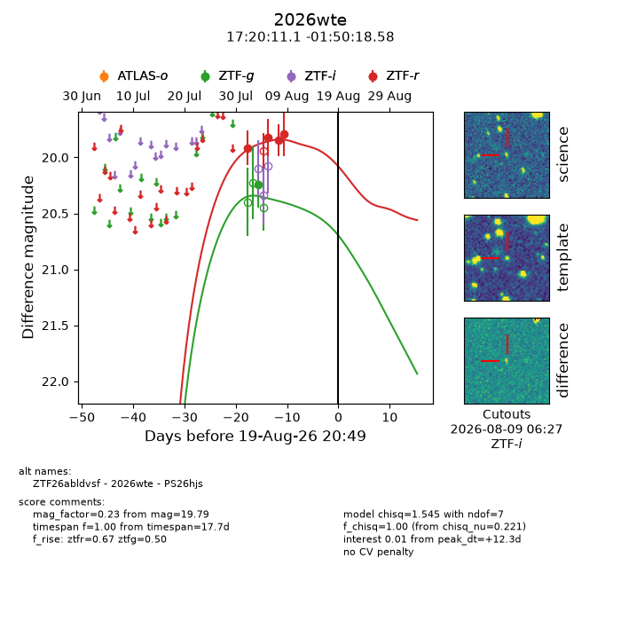
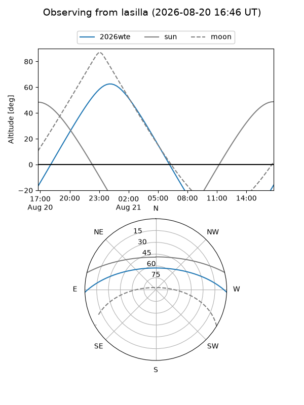
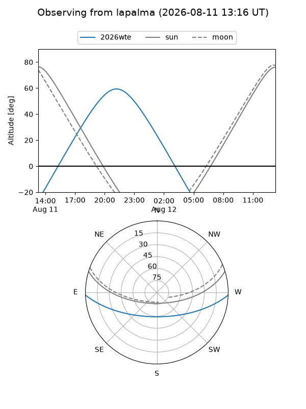
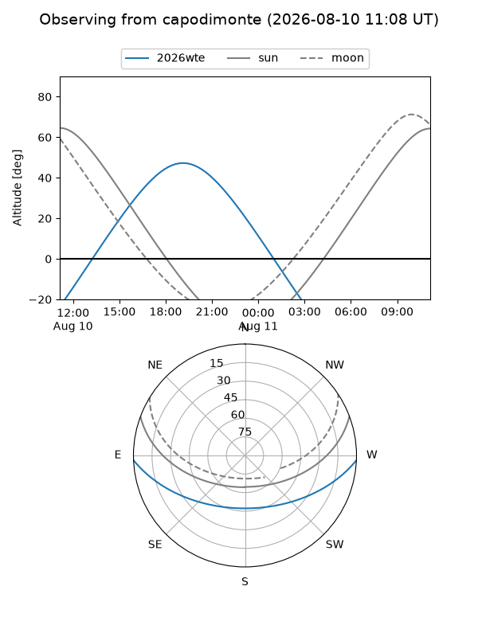
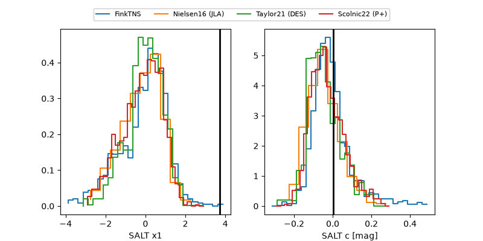

2026wte
Target 2026wte at 2026-08-19 20:52
Aliases and brokers:
FINK-ZTF: ztf.fink-portal.org/ZTF26abldvsf
Lasair-ZTF: lasair-ztf.lsst.ac.uk/objects/ZTF26abldvsf
ALeRCE-ZTF: alerce.online/object/ZTF26abldvsf
YSE-PZ: ziggy.ucolick.org/yse/transient_detail/2026wte
TNS name: wis-tns.org/object/2026wte
Direct TNS query: direct search
alt names
ZTF26abldvsf (ztf,fink_ztf)
2026wte (tns,yse)
PS26hjs (panstarrs)
Coordinates:
equatorial (ra, dec) = 260.0462,-1.83849
equatorial (HMS+DMS) = 17:20:11.08,-01:50:18.58
galactic (l, b) = (20.3719,+19.28504)
Flags:
TNS type: nan
peak dt: +12.3
Photometry:
last ztfg=20.25, ztfr=19.79
1 ztfg, 4 ztfr detections
Lightcurve

Visibility



Additional plots
